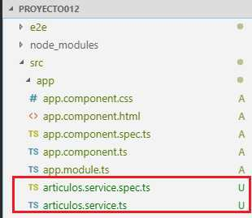

El pilar fundamental cuando creamos una aplicación en Angular es la correcta definición de sus componentes y relaciones entre ellas.
La propuesta del framework de Angular es delegar todas las responsabilidades de acceso a datos (peticiones y envío de datos) y lógica de negocios en otras clases que colaboran con las componentes. Estas clases en Angular se las llama servicios.
Tal es la importancia de los servicios en Angular que la herramienta Angular CLI nos provee la capacidad de crearlos.
Veremos con un ejemplo los pasos que debemos dar para crear un servicio y luego consumirlo desde una componente.
Confeccionar una aplicación Angular que muestre una lista de artículos. Los artículos almacenarlos en un vector localizado en un servicio. Desde la componente acceder al servicio para pedir los artículos a ser mostrados.
Desde la línea de comandos de Node.js procedemos a crear el proyecto012:
f:\angularya> ng new proyecto012
Crearemos el servicio que contiene en memoria la lista de artículos (en muchos casos como veremos más adelante el servicio tiene la responsabilidad de recuperar los datos de un servidor web):
f:\angularya\proyecto012\> ng generate service articulos
Con el comando anterior estamos creando la clase 'ArticulosService'.
Se crean dos archivos:
El código generado de la clase 'ArticulosService' es:
import { Injectable } from '@angular/core';
@Injectable({
providedIn: 'root'
})
export class ArticulosService {
constructor() { }
}
Lo modificamos por el siguiente código que permita recuperar desde la componente el vector de artículos:
import { Injectable } from '@angular/core';
@Injectable({
providedIn: 'root'
})
export class ArticulosService {
constructor() { }
retornar() {
return [
{
codigo: 1,
descripcion: "papas",
precio: 12.33
},
{
codigo: 2,
descripcion: "manzanas",
precio: 54
},
{
codigo: 3,
descripcion: "sandía",
precio: 14
}
];
}
}
El decorador @Injectable() será de suma importancia para poder acceder a esta clase desde la componente.
El archivo 'app.module.ts' no se modifica.
Ahora veremos como consumimos el servicio desde nuestra componente. Procedemos a modificar la componente que se crea por defecto 'AppComponent' que tiene por responsabilidad mostrar en la página el listado de artículos:
import { Component, OnInit } from '@angular/core';
import { ArticulosService } from './articulos.service';
@Component({
selector: 'app-root',
templateUrl: './app.component.html',
styleUrls: ['./app.component.css']
})
export class AppComponent implements OnInit{
articulos :any;
constructor(private articulosServicio: ArticulosService) {
}
ngOnInit() {
this.articulos=this.articulosServicio.retornar();
}
}
Primero importamos el servicio llamado ArticulosService que se almacena en el archivo 'articulos.service.ts':
import { ArticulosService } from './articulos.service';
Para inyectar el objeto de la clase 'ArticulosService' que crea Angular en forma automática lo hacemos en el parámetro del constructor:
constructor(private articulosServicio: ArticulosService) {
}
Se almacena en el atributo 'articulosServicio' la referencia del objeto de la clase 'ArticulosService' que crea Angular.
En el método ngOnInit actualizamos la variable 'articulos' con el vector que devuelve el método 'retornar':
this.articulos=this.articulosServicio.retornar();
Esta asignación dispara la actualización de la página HTML.
Falta que codifiquemos la vista con los datos recuperados:
app.component.html
<table border="1">
<tr *ngFor="let articulo of articulos">
<td>{{articulo.codigo}}</td>
<td>{{articulo.descripcion}}</td>
<td>{{articulo.precio}}</td>
</tr>
</table>
Si ejecutamos ahora el proyecto012 veremos en el navegador el listado de artículos:
ng server -o
Podemos probar esta aplicación en la web aquí.
Al principio y con problemas muy sencillos parece que solo agregamos complejidad a nuestra aplicación.
Veremos que esta forma de desacoplar el acceso a datos de las componentes y delegarla en otras clases llamadas servicios facilita el mantenimiento de nuestras aplicaciones.
También hay que hacer notar que la forma de consumir dichas clases se hace por medio del patrón de inyección de dependencias.